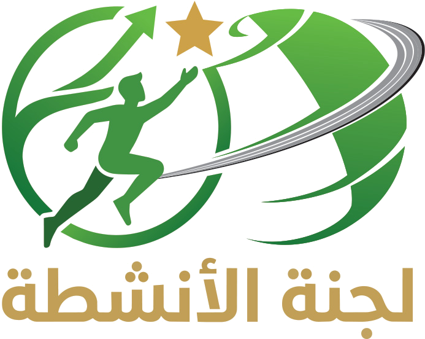
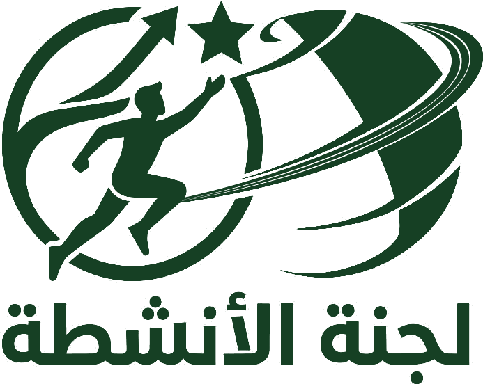
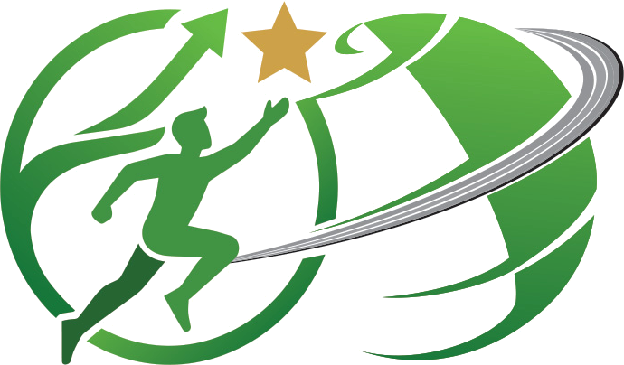
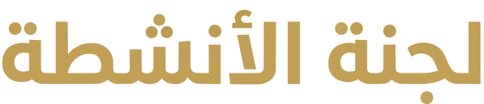
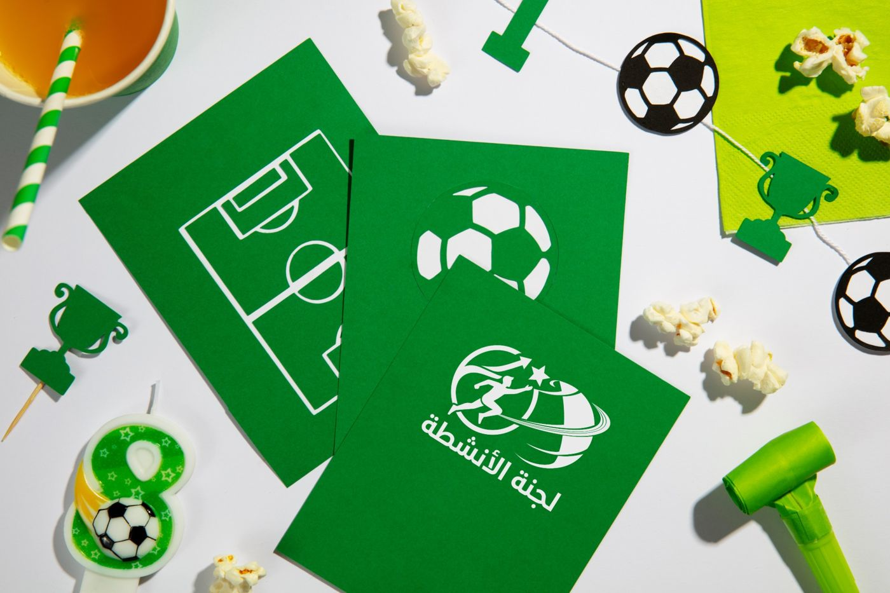
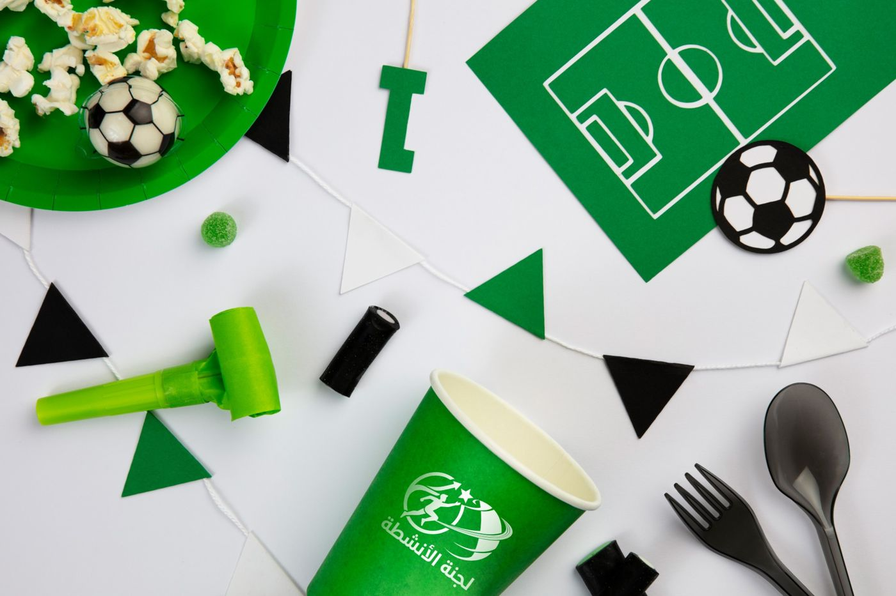
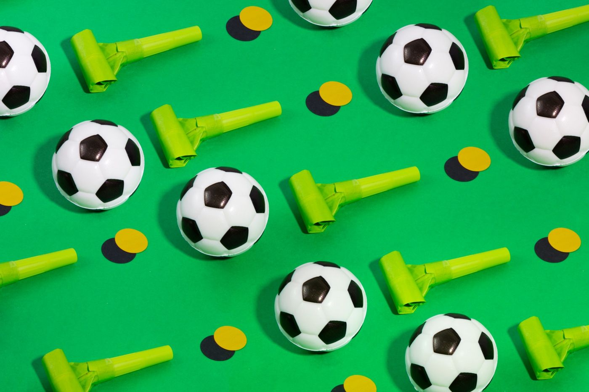

نقطة البدايةالمدار
الشركة والمنظومة التي ينتمي إليها الجميع.
المسارالنشاط والنمو
العدّاء والسهم: مشاركة وحركة وتصاعد خطوة بعد خطوة.
الوجهةنجم المدار
التميّز والتقدير، النجمة التي يسعى إليها كل مشارك.
من المدار ننطلق، وبالنشاط نصعد نحو النجمة. هذا الدليل يشرح فكرة الشعار وقواعد استخدامه وألوانه وخطوطه وعناصره.

الشعار مبني على شعار شركة المدار: الكرة الأرضية وحلقة المدار التي تدور حولها. داخل هذا المدار يقف عدّاء ينطلق مع سهم صاعد، والسهم يقود العين إلى النجمة الذهبية في القمة. الرسالة أن أنشطة اللجنة جزء من منظومة المدار، وأن كل نشاط خطوة في مسار نمو يصل بالموظف والفريق إلى «نجم المدار».

1 2 3 4 5 6 7قوس يحيط بالعدّاء من اليسار. يمثّل اللجنة التي تحتضن الموظفين وتجمعهم في بيئة واحدة.
مقاطع الكرة الأرضية مأخوذة من شعار شركة المدار. تربط هوية اللجنة بالشركة الأم وتجعلها امتدادًا لها.
خطوط رمادية متوازية تلتف حول الكرة، تجمع بين فكرة المدار ومسارات مضمار الجري. هي الطريق الذي يتحرك عليه النشاط.
شخص في لحظة انطلاق ويده ممدودة نحو الأعلى. يمثّل الموظف المشارك وطاقة الأنشطة الرياضية والاجتماعية والثقافية.
يبدأ من أسفل الدائرة ويرتفع منحنيًا إلى القمة. يرمز إلى النمو والتصاعد المستمر الذي تصنعه الأنشطة في الأداء والروح الجماعية.
النجمة الذهبية هي الهدف الذي يتجه إليه السهم وتمتد إليه يد العدّاء: التميّز والتكريم والوصول إلى القمة.
كتابة عربية هندسية بالذهبي، بنقاط دائرية تتناغم مع استدارة الكرة والنجمة. الاسم ثابت ولا يُعاد كتابته بخط آخر.
الشركة والمنظومة التي ينتمي إليها الجميع.
العدّاء والسهم: مشاركة وحركة وتصاعد خطوة بعد خطوة.
التميّز والتقدير، النجمة التي يسعى إليها كل مشارك.
من المدار ننطلق، وبالأنشطة نصعد، وإلى النجمة نصل.
الأخضر هو لون الحياة والنمو والملاعب، ويأتي في الشعار بتدرّج من الأخضر المضيء إلى الأخضر العميق ليعطي الكرة إحساسًا بالحجم. الذهبي مخصص للنجمة والاسم لأنه لون الإنجاز والميداليات. الرمادي والفحمي لحلقة المدار فقط.
تنبيه وضوح: الذهبي على الأبيض تباينه قرابة 2.3 إلى 1، فلا يُستخدم للنصوص الصغيرة. يُستعمل للشعار والأرقام الكبيرة والزخارف، أو على خلفية أخضر المدار حيث يكون أوضح.
اسم «لجنة الأنشطة» في الشعار مرسوم كقطعة واحدة ولا يُكتب بخط. لبقية المواد نستخدم خطين متوفرين مجانًا من Google Fonts ويدعمان العربية واللاتينية.
النسخة الملوّنة على الأبيض هي الأساس. تُستخدم النسخ الأخرى حسب الخلفية ووسيلة الطباعة، دون أي تعديل في نسب العناصر.



الوحدة «س» = ارتفاع النجمة الذهبية، أي قرابة سُدس ارتفاع الشعار الكامل.
تُترك مسافة «س» خالية من كل الجهات. لا يدخلها نص ولا صورة ولا حافة صفحة ولا شعار آخر. عند وضع الشعار بجوار شعار شركة المدار تكون المسافة بينهما «2س» مع خط فاصل رفيع اختياري.
طباعة: 25 ملم عرضًا كحد أدنى. شاشات: 120 بكسل.
طباعة: 12 ملم. شاشات: 32 بكسل. أصغر من ذلك تختفي خطوط المضمار.
أي تعديل على الشعار يضعف التعرّف عليه. هذه أكثر الأخطاء شيوعًا:
ثلاثة عناصر من الشعار يمكن استخدامها منفصلة في التصاميم لتوحيد المواد دون تكرار الشعار في كل مكان.
صور مسطّحة من الأعلى بإضاءة نهارية ساطعة، على أبيض أو أخضر صريح. أدوات رياضية واحتفالية (كرات، صفّارات، كؤوس، رايات) موزّعة بإيقاع منتظم. الأخضر هو اللون الغالب مع لمسات ذهبية أو صفراء قليلة.
أيقونات خطية بسماكة 2 بكسل وزوايا مستديرة، بلون أخضر المدار أو بالأبيض على الأخضر. يُستعمل الذهبي فقط لأيقونة الكأس أو الميدالية.



الكتابة باسم اللجنة قصيرة وحماسية وتخاطب الجميع، وتربط كل نشاط بفكرة الصعود نحو النجمة.